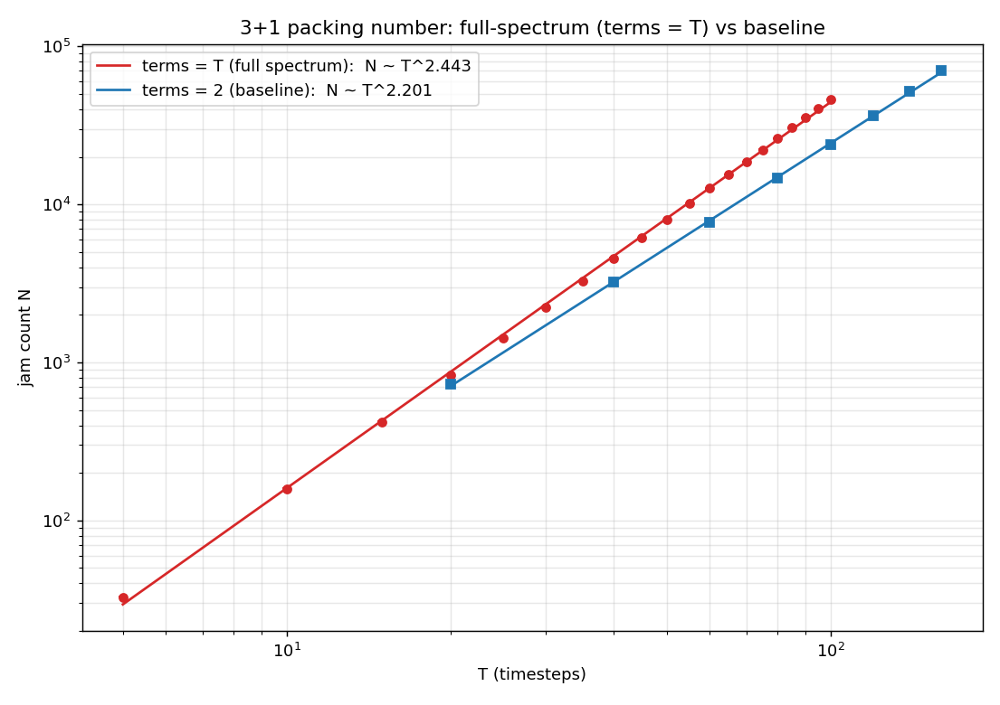
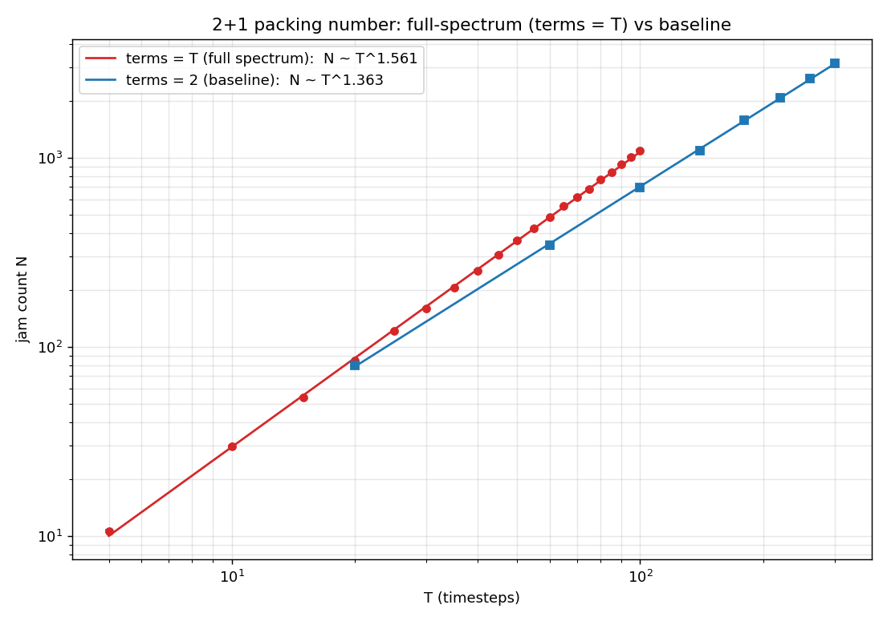
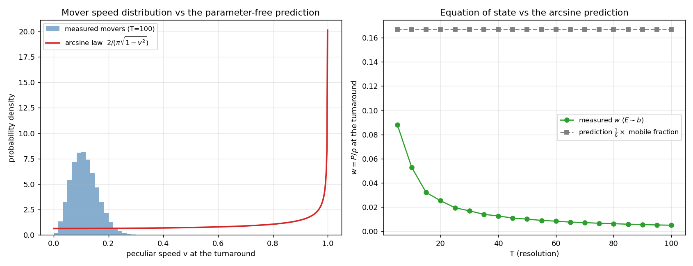
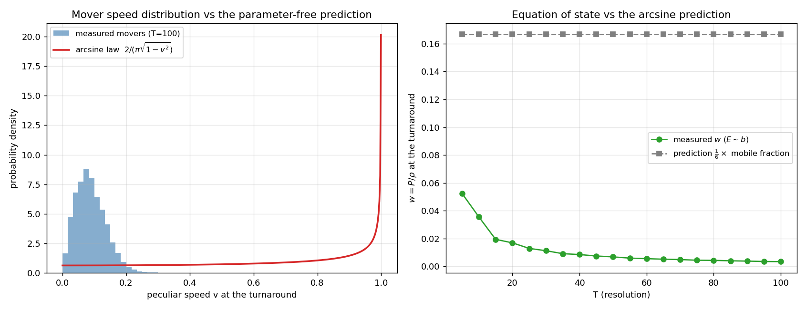

FULLSPEC: the terms = T limit — a steeper packing law, uniform slices, and a cold w = d/6T universe
The FREQ/PACK sweeps varied the sinusoid term count as a small fixed
knob (terms ∈ {2..10}) and found the packing law
indifferent to it. This campaign takes the knob to the limit the
model allows: terms = T. Since the
frequency pool is [2, T] (maxfreq = T, pool size
T−1) and an axis draws terms−1 unique frequencies,
terms = T means every axis carries every allowed
frequency exactly once — a full-spectrum worldline whose
only randomness is the simplex split of the unit slope budget across
terms, the amplitude signs, and the even-frequency phases (~900
coefficients per worldline at T = 100 vs the legacy ~12).
Engine support: the Path cap became a build knob
(-DKMAX_WIGGLE=149 "wide" binaries, built on demand by
the orchestrator; over-cap --terms is now fatal instead
of silently clamping), the full-pool frequency draw got an O(nw)
fill-and-shuffle fast path, and the simplex split an O(nw)
exponential-spacings draw — all gated so every stored
campaign's RNG stream is untouched (verified by A/B against stored
pack runs).


- The packing exponent steepens — the terms invariance breaks at the spectrum edge. 3+1: whole-ladder fit D = 2.44, windowed fits crawling upward (T ≥ 30: 2.52, T ≥ 50: 2.53, T ≥ 75: 2.55), adjacent-rung local slopes flat at ~2.53 ± 0.05 across T = 75–100. 2+1: 1.58 vs the baseline 1.38. The same slow upward crawl the terms = 2 model shows toward its 2.32 plateau, but around a distinctly higher value — the T ≤ 100 plateau sits near 2.53 (above 5/2; the jamming-limit value is an open question, as it was for the baseline's 7/3 chase).
- Matter slices stay uniform to a few percent — with a small unexplained deficit. Wrapped turnaround D2 climbs to 2.93 (sphere) / 2.86 (cube) by T = 75 in 3+1 and then flattens at 2.90–2.92 / 2.84–2.85 through T = 100; 2+1 peaks near 2.03 (T = 60) and eases to 1.97 / 1.94 at T = 100. That is uniform to ~3%, but visibly short of the baseline's exact 3.01 / 2.02 — measured there at larger clouds (N ~ 90k vs 46k here). Whether the deficit closes with N or is a real sub-uniform signature of the full-spectrum jam is an open question for a larger-T run. [Resolved next day: the deficit was the unwrapped estimator's edge bias, shared identically by the baseline; the periodic estimator reads 3.03/2.04 — exact uniformity holds. See the 07-26 resolution entry.]


- The full-spectrum universe is cold: w = d/(6T) → dust. With the unit budget split over ~T terms, the turnaround velocity is a sum of many incoherent contributions: odd terms freeze (cos(bπ/2) = 0), even-term phases average ⟨cos²f⟩ = ½, and the simplex shares give ⟨wj²⟩ = 2/(nw(nw+1)) — combining to a parameter-free per-axis ⟨v²⟩ = 1/(2T), i.e. w = d/(6T). Measured: 0.0066 vs predicted 0.00667 (3+1, T = 75), 0.0050 vs 0.0050 (3+1, T = 100), 0.0034 vs 0.00333 (2+1, T = 100) — identical under both energy dictionaries (E ~ b and E ~ arc length agree to 4 decimals). Every worldline is mobile (all carry even frequencies), so the arcsine law's premise dissolves; the replacement is a Maxwell-like bell with ⟨v⟩ ≈ 0.13 (T = 75). Where the few-term model equilibrates to w ≈ 0.15 independent of resolution, the full-spectrum model is exact dust in the continuum limit.
- Provenance / ops. Pilot: T = 75
terms = 75 ran 8.4 min at 5.5 GB on a 3080
(the T&sup5; cost model over-predicted 2.5×). kitt needed a
driver-mismatch reboot mid-campaign; two vast.ai 4090s
($1.72 total) took the extension's top rungs and were destroyed
on completion. Stores + dumps in
data/fullspec/; resume commands in the campaign memory.